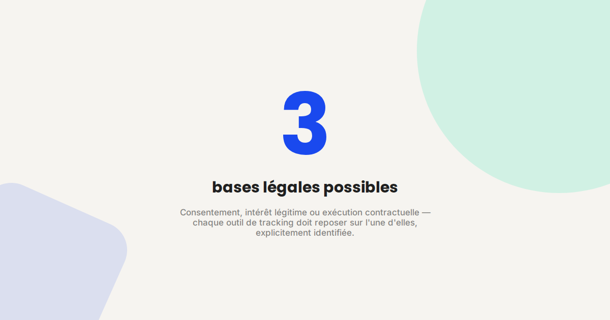
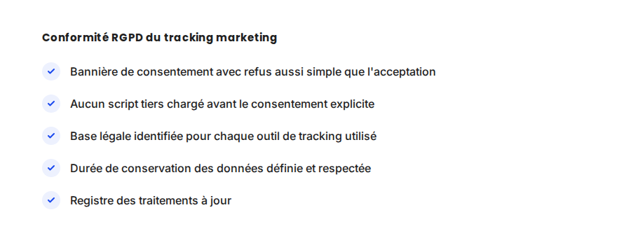

RGPD et marketing digital : ce qu'on a le droit de tracker en 2026
Le RGPD n'a rien d'un frein théorique : dans les audits que je mène, une part significative des sites tracke encore des données sans base légale valide, souvent par méconnaissance plutôt que par mauvaise foi. Faire le point sur ce qui est réellement autorisé évite des mois de correction a posteriori.

Le cadre RGPD n'a pas changé dans son principe depuis son entrée en vigueur, mais son application au marketing digital continue d'évoluer — entre recommandations affinées de la CNIL, disparition progressive des cookies tiers et essor du tracking server-side. Ce qui était toléré il y a quelques années ne l'est plus systématiquement aujourd'hui.
Ce qui ne change pas
Le principe de base reste identique : tout traitement de données personnelles doit reposer sur une base légale valide, et le consentement, quand c'est la base retenue, doit être libre, spécifique et aussi facile à refuser qu'à accepter. Cette exigence s'applique directement à la mise en place d'un outil comme la Conversion API — le tracking server-side ne dispense pas du consentement, il change seulement où et comment la donnée est traitée après collecte.
Ce qui change vraiment en 2026
- La disparition progressive des cookies tiers pousse vers le first-party. Les navigateurs restreignent de plus en plus le tracking cross-site, ce qui renforce mécaniquement l'intérêt — et la nécessité de conformité — des données collectées en direct par le site lui-même.
- Le tracking server-side ne contourne pas le RGPD. Déplacer la collecte côté serveur améliore la fiabilité de la mesure, mais ne dispense en rien du recueil du consentement en amont — une confusion fréquente qui expose à un risque de non-conformité.
- Les recommandations CNIL sur les bannières se sont durcies. Un bouton "Tout refuser" doit être aussi visible et accessible qu'un bouton "Tout accepter", sur la même couche de la bannière, sans étape supplémentaire cachée.
- Le registre des traitements est de plus en plus contrôlé. Au-delà de la bannière visible, la documentation interne des traitements de données devient un point de contrôle fréquent lors des audits.

Un exemple qui illustre bien la différence
Lors d'un audit technique, un site chargeait son tag Google Tag Manager de façon inconditionnelle dès l'arrivée du visiteur, avant tout recueil de consentement — une non-conformité fréquente et invisible sans audit dédié. Le passage à un chargement différé, déclenché uniquement après acceptation explicite ou visite précédente enregistrée, a résolu le problème sans dégrader la qualité de la mesure une fois le consentement obtenu.
Ce qu'il faut faire concrètement
- Auditez le chargement de vos scripts tiers : aucun script de tracking ne doit se charger avant un consentement explicite ou une visite précédente déjà enregistrée.
- Identifiez la base légale de chaque outil utilisé : consentement, intérêt légitime ou exécution contractuelle, sans zone grise.
- Vérifiez que le refus est aussi simple que l'acceptation dans votre bannière de consentement, conformément aux recommandations actuelles de la CNIL.
- Tenez un registre des traitements à jour, au-delà de la seule bannière visible par les visiteurs.
FAQ
Le tracking server-side dispense-t-il du consentement RGPD ?
Non. Le tracking server-side change la façon dont la donnée est collectée et transmise techniquement, mais ne modifie en rien l'obligation de recueillir un consentement valide en amont.
Que risque un site qui charge ses scripts de tracking avant consentement ?
Un risque de sanction de la CNIL, dont le montant dépend de la gravité et de la récurrence du manquement, ainsi qu'une perte de confiance si le manquement est rendu public.
Le RGPD s'applique-t-il à un site qui ne vise que la France ?
Oui, le RGPD s'applique dès qu'un site collecte des données de résidents européens, indépendamment du pays d'hébergement du site ou de la localisation de l'entreprise qui l'exploite.
Envie de vérifier la conformité RGPD de votre tracking ?
Pour aller plus loin, voir la page Politique de confidentialité, la page Analytics, et la page Conversion API.
Pour continuer sur ce sujet.